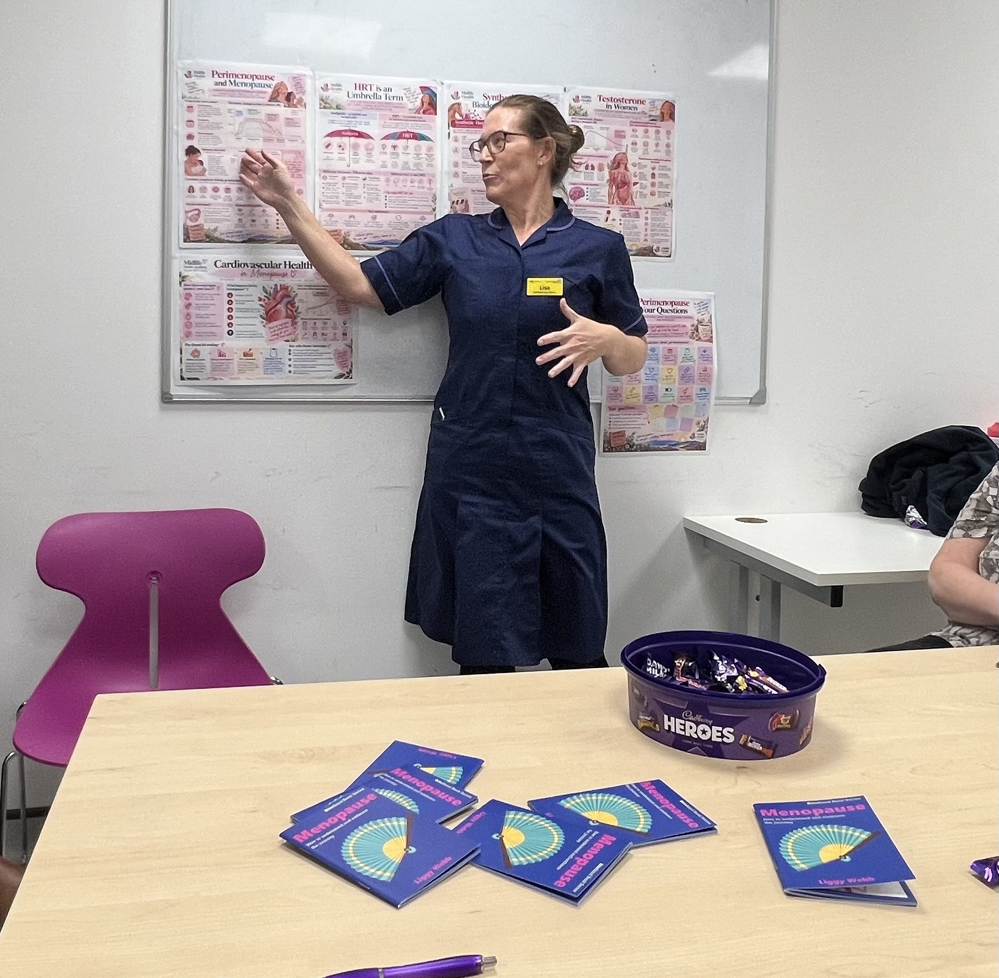
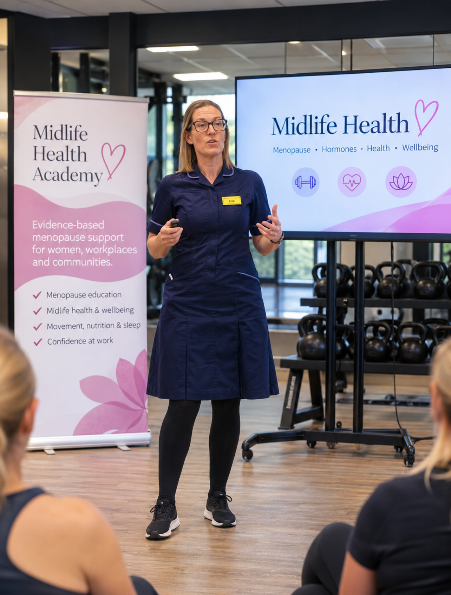

Understand your hormones. Empower your midlife.
Hormones don't have to be complicated. Whether you're approaching perimenopause, experiencing menopause symptoms or simply want to better understand what's happening to your body, MidLife Health Academy is here to help.
Explore ServicesWelcome to MidLife Health Academy
Through relaxed conversations, individual sessions, social gatherings and workplace education, I make hormone health simple, accessible and evidence-based.
Together we'll explore symptoms, treatment options, the benefits and risks of HRT, long-term health and the myths that often surround menopause.
No jargon. No judgement. Just honest, informed conversations about your health.
About Lisa

I'm a Registered Nurse with more than 20 years of NHS experience, a British Menopause Society member and a qualified educator with specialist menopause training.
I created MidLife Health Academy because I believe everyone deserves to understand their hormones and feel confident making decisions about their health.
My approach combines evidence-based education with friendly, down-to-earth conversations that help people understand their options and feel more informed about the changes they're experiencing.

How Can We Work Together?
One-to-One Menopause Coaching
Personal educational support to help you understand symptoms, hormone health, HRT and your available options.
Learn More →Peri-Parties
Invite your friends together for a relaxed and informative evening discussing hormones, symptoms, HRT and menopause myths.
Learn More →Menopause Cafés
Friendly nurse-led conversations that bring communities together in welcoming café environments.
Learn More →Corporate Menopause Education
Evidence-based workplace education for businesses, managers and employees.
Learn More →Why Choose MidLife Health Academy?
- Nurse-led expertise – Over 20 years of NHS experience alongside specialist menopause education.
- Evidence-based information – Clear, balanced information about hormones, treatment options and long-term health.
- Relaxed and approachable – Friendly conversations without complicated medical language or overwhelming information.
- Education that empowers – Helping you feel informed, confident and in control of the decisions you make.
Let's Talk Hormones
Whether you're looking for individual support, planning a Peri-Party, hosting a Menopause Café or supporting your workforce, I'd love to hear from you.
Get in touch with MidLife Health Academy and let's start the conversation.
Email: EMAIL
WhatsApp: PHONE NUMBER